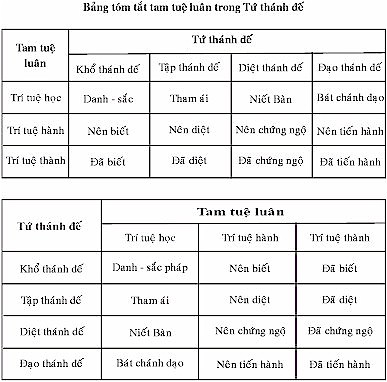

|
Tìm hiểu PHÁP HÀNH THIỀN TUỆ - Tỳ khưu HỘ PHÁP
PHẦN II PHÁP HÀNH (BHĀVANĀ) 2- PHÁP HÀNH THIỀN TUỆ (tiếp theo) 5- Tứ Thánh Đế Tứ thánh đế (Ariyasacca) là 4 sự thật chân lý mà bậc Thánh nhân đã chứng ngộ, đó là:
Tứ thánh đế là nền tảng căn bản trong giáo pháp của Chư Phật trong quá khứ, hiện tại và vị lai. * Đức Thế Tôn có danh hiệu là "Sammāsambuddha": Chánh Đẳng Giác, là do chính Ngài đã chứng ngộ chân lý Tứ thánh đế, chứng đắc 4 Thánh Đạo, 4 Thánh Quả và Niết Bàn, trở thành bậc Thánh Arahán đầu tiên, được tôn xưng bậc Chánh Đẳng Giác cao thượng, độc nhất vô nhị trong 10 ngàn thế giới chúng sinh. * Đức thế tôn có danh hiệu "Buddha", Đức Phật, là do chính Ngài đã chứng ngộ chân lý Tứ thánh đế đầu tiên, rồi Ngài đem ra giáo huấn cho chúng sinh có duyên lành cùng chứng ngộ chân lý Tứ thánh đế như Ngài. Sau khi trở thành bậc Chánh Đẳng Giác, Đức Phật đã ngự đến khu rừng phóng sanh nai gọi là Isipatana, để tế độ nhóm 5 Tỳ khưu: Đại Đức Koṇṇañña, Đại Đức Vappa, Đại Đức Bhaddiya, Đại Đức Mahānāma, Đại Đức Assaji. Đức Thế Tôn thuyết giảng bài kinh đầu tiên gọi là "Dhammacakkappavattanasutta": Kinh Chuyển Pháp Luân. Khi nhóm 5 Tỳ khưu lắng nghe xong bài kinh, trong đó Đại Đức Koṇṇañña trưởng nhóm đã chứng ngộ chân lý Tứ thánh đế, chứng đắc Nhập Lưu Thánh Đạo, Nhập Lưu Thánh Quả, trở thành bậc Thánh Nhập Lưu, vị Thánh Thanh văn đệ tử đầu tiên trong giáo pháp của Đức Phật Gotama, cùng với 180 triệu chư thiên và Phạm thiên cũng chứng ngộ chân lý Tứ thánh đế, chứng đắc Thánh Đạo, Thánh Quả đồng thời trong lúc ấy. Trong bài Kinh Chuyển Pháp Luân này, có một đoạn Đức Thế Tôn khẳng định truyền dạy toàn cõi thế giới rằng: "Yato ca kho me bhikkhave imesu catūsu ariyasaccesu evaṃ tiparivaṭṭaṃ dvādasākāraṃ yathābhūtaṃ ñāṇadassanaṃ suvisuddhaṃ ahosi". "Athāhaṃ bhikkhave sadevake loke samārake sabrahmake sassamaṇabrāhmaṇiyā pajāya devamanussāya "anuttaraṃ sammāsambodhiṃ abhisambuddho" ti paccaññāsiṃ…". [39] "Này Chư Tỳ khưu, khi nào trí tuệ thiền tuệ đã thấy rõ, biết rõ đúng thực tánh của Tứ thánh đế theo tam tuệ luân thành 12 loại trí tuệ trong sáng thanh tịnh, đã phát sanh đến với Như Lai". "Này Chư Tỳ khưu, khi ấy Như Lai khẳng định truyền dạy rằng: "Như Lai đã chứng đắc thành bậc Chánh Đẳng Giác vô thượng trong toàn thế giới chúng sinh: nhân loại, Vua Chúa, Sa môn, Bà la môn, Chư thiên, Ma Vương và Phạm thiên cả thảy". Như vậy, Đức Thế Tôn có danh hiệu "Sammāsambuddha" vì chính Ngài tự chứng ngộ chân lý Tứ thánh đế theo tam tuệ luân là:
Ba loại trí tuệ trong Tứ thánh đế (3x4) thành 12 loại trí tuệ, mà Đức Phật đã tuần tự chứng đạt một cách hoàn toàn trong sáng thanh tịnh, để trở thành bậc Chánh Đẳng Giác (Sammāsambuddho). Đối với hàng Phật tử là bậc xuất gia Sa di, Tỳ khưu, cũng như hàng tại gia cư sĩ là cận sự nam, cận sự nữ, cùng tất cả chư thiên, Phạm thiên có nguyện vọng trở thành bậc Thánh nhân, phải hành theo con đường duy nhất mà Đức Phật đã tiến hành. Đó là: pháp hành thiền tuệ để dẫn đến sự chứng ngộ chân lý Tứ thánh đế theo tam tuệ luân, chứng đắc 4 Thánh Đạo, 4 Thánh Quả và Niết Bàn, pháp giải thoát khổ tử sanh luân hồi trong ba giới bốn loài. Tìm hiểu rõ ý nghĩa Tứ thánh đế Trong bộ Thanh Tịnh Đạo giảng giải 16 ý nghĩa của Tứ thánh đế [40] như sau: 1- Khổ thánh đế: Đó là ngũ uẩn chấp thủ, hay danh pháp, sắc pháp trong tam giới là sự thật chân lý Khổ thánh đế, có 4 ý nghĩa thực trạng là:
2- Tập thánh đế: Đó là tâm tham ái, Nhân sanh Khổ thánh đế, có 4 ý nghĩa thực trạng là:
3- Diệt thánh đế: Đó là Niết Bàn, pháp diệt Khổ thánh đế, có 4 ý nghĩa thực trạng là:
4- Đạo thánh đế: Đó là Pháp hành Bát chánh đạo dẫn đến chứng ngộ Niết Bàn, có 4 ý nghĩa thực trạng là:
Tất cả 16 ý nghĩa thực trạng của Tứ thánh đế này đồng thành tựu cùng một lúc trong Thánh Đạo Tâm, không trước không sau. Tam Tuệ Luân Tam tuệ luân (Tiparivaṭṭa): là 3 bậc trí tuệ luân chuyển theo Tứ thánh đế như sau:
1- Trí Tuệ Học Tứ Thánh Đế 1.1- Trí tuệ học Khổ thánh đế Trí tuệ học là hiểu biết rõ các chi pháp trong Khổ thánh đế. Khổ thánh đế: Đó là ngũ uẩn chấp thủ, hay danh pháp, sắc pháp trong tam giới mà bậc Thánh nhân chứng ngộ bằng Thánh Đạo Tuệ. * Ngũ uẩn chấp thủ là:
* Danh pháp, sắc pháp trong tam giới là: - Danh pháp trong tam giới đó là tâm và tâm sở. * Tam giới tâm: có 81 tâm (trừ 8 hay 40 siêu tam giới tâm, vì không phải Khổ thánh đế):
* Tâm sở: có 51 tâm sở (trừ tham tâm sở, vì tham tâm sở thuộc Tập thánh đế). - Sắc pháp chỉ có trong dục giới và sắc giới, không có trong vô sắc giới, có tất cả 28 sắc pháp. Như vậy, gồm có 81 tam giới tâm + 51 tâm sở + 28 sắc pháp là Khổ thánh đế, là pháp mà bậc Thánh nhân đã chứng ngộ bằng Thánh Đạo Tuệ. 1.2- Trí tuệ học Tập thánh đế Trí tuệ học là hiểu biết rõ các chi pháp trong Tập thánh đế. Tập thánh đế: Đó là tâm tham ái, nhân sanh Khổ thánh đế. Tham ái (taṇhā): có 3 loại, 36 loại, 108 loại: * Tham ái theo tính chất có 3 loại:
* Tham ái theo 6 đối tượng có 6 loại: Mỗi tham ái phát sanh do nương nhờ 6 đối tượng, nên có 6 loại tham ái:
* Tham ái theo 3 thời: Mỗi tham ái phát sanh do nương nhờ 6 đối tượng hiện tại; 6 đối tượng quá khứ; 6 đối tượng vị lai (6 x 3). Như vậy: – Dục ái có 18 loại tham ái.
* Tham ái theo 2 bên trong và ngoài: Mỗi tham ái phát sanh do nương nhờ 6 đối tượng bên trong của mình, và 6 đối tượng bên ngoài: người khác và các vật khác (có sanh mạng và không sanh mạng).
Tóm lại: tham ái tổng cộng có 36 + 36 + 36 = 108 loại tham ái đều là nhân sanh khổ thánh đế, là pháp mà bậc thánh nhân đã chứng ngộ bằng Thánh Đạo Tuệ. Tâm tham ái không những là nhân sanh khổ ở kiếp hiện tại, mà còn là nhân sanh khổ dẫn dắt tái sanh trong kiếp sau nữa. Hễ còn tâm tham ái, thì còn phải tái sanh kiếp sau, trong vòng tử sanh luân hồi trong ba giới bốn loài không cùng, không tận. 1.3- Trí tuệ học Diệt khổ thánh đế Trí tuệ học là hiểu biết rõ các chi pháp trong Diệt khổ thánh đế. Diệt khổ thánh đế: Đó là Niết Bàn, pháp diệt nhân sanh Khổ thánh đế, cũng là pháp diệt quả Khổ thánh đế. Niết Bàn có 2 loại theo bậc Thánh Arahán.
Niết Bàn có 3 loại theo đối tượng.
Vậy, các loại Niết Bàn, Diệt khổ thánh đế, là pháp mà Chư bậc Thánh đã chứng ngộ bằng Thánh Đạo Tuệ và Thánh Quả Tuệ. 1.4- Trí tuệ học Đạo thánh đế Trí tuệ học là hiểu biết rõ các chi pháp trong Đạo thánh đế. Đạo thánh đế: Đó là Bát chánh đạo hợp đủ 8 chánh, là pháp hành dẫn đến sự chứng ngộ Niết Bàn. Bát chánh đạo: - Chánh kiến: Trí tuệ chân chính, là trí tuệ thiền tuệ chứng ngộ chân lý Tứ thánh đế: Khổ thánh đế, Tập thánh đế, Diệt thánh đế và Đạo thánh đế. - Chánh tư duy: Tư duy chân chính, là tư duy thoát ra khỏi ngũ trần, tư duy không làm khổ mình khổ người, tư duy không làm hại mình hại người. - Chánh ngữ: Nói lời chân chính, là không nói dối, không nói lời chia rẽ, không nói lời thô tục chửi rủa mắng nhiếc, không nói lời vô ích. - Chánh nghiệp: Hành nghiệp chân chính, là không sát sanh, không trộm cắp, không tà dâm. - Chánh mạng: Nuôi mạng chân chính, là tránh xa cách sống tà mạng do thân và khẩu. - Chánh tinh tấn: Tinh tấn chân chính là:
- Chánh niệm: Niệm chân chính, là niệm thân, niệm thọ, niệm tâm, niệm pháp, (ngoài ra không gọi là chánh niệm). - Chánh định: Định chân chính, là định tâm trong các bậc siêu tam giới thiền tâm, có Niết Bàn làm đối tượng. (Ngoài ra, định tâm ở bậc thiền sắc giới, thiền vô sắc giới không gọi là chánh định). Vậy, Bát chánh đạo hợp đủ 8 chánh, là pháp hành dẫn đến sự chứng ngộ Niết Bàn, diệt Khổ thánh đế, là pháp mà chư bậc Thánh đã chứng ngộ bằng Thánh Đạo Tuệ và Thánh Quả Tuệ. Trên đây là 4 trí tuệ học, là học các chi pháp của Tứ thánh đế, thuộc về phần pháp học (pariyattidhamma). 2- Trí Tuệ Hành Phận Sự Tứ Thánh Đế Khi 4 trí tuệ học đã hiểu biết rõ tất cả chi pháp trong Tứ thánh đế xong rồi, luân chuyển đến 4 trí tuệ hành theo phận sự của mỗi Thánh Đế như sau: 2.1- Trí tuệ hành phận sự Khổ thánh đế. Khổ thánh đế: Đó là ngũ uẩn chấp thủ, hay danh pháp, sắc pháp trong tam giới, là pháp mà trí tuệ hành có phận sự nên biết (pariññeyya); hay trí tuệ hành có phận sự nên biết danh pháp, sắc pháp là khổ đế. (Không phải có phận sự nên diệt, nên chứng ngộ, nên tiến hành). 2.2- Trí tuệ hành phận sự Tập thánh đế. Tập thánh đế: Đó là tâm tham ái, nhân sanh Khổ thánh đế, là pháp mà trí tuệ hành có phận sự nên diệt (pahātabba); hay trí tuệ hành có phận sự nên diệt tâm tham ái. (Không phải có phận sự nên biết, nên chứng ngộ, nên tiến hành). 2.3- Trí tuệ hành phận sự Diệt khổ thánh đế. Diệt khổ thánh đế: Đó là Niết Bàn, diệt nhân sanh Khổ thánh đế, là pháp mà trí tuệ hành có phận sự nên chứng ngộ (sacchikātabba); hay trí tuệ hành có phận sự nên chứng ngộ Niết Bàn. (Không phải có phận sự nên biết, nên diệt, nên tiến hành). 2.4- Trí tuệ hành phận sự Đạo thánh đế. Đạo thánh đế: Đó là Bát chánh đạo, pháp hành dẫn đến sự chứng ngộ Niết Bàn, pháp diệt nhân sanh Khổ thánh đế, là pháp mà trí tuệ hành có phận sự nên tiến hành (bhāvetabba); hay trí tuệ hành có phận sự nên tiến hành Bát chánh đạo. (Không phải có phận sự nên biết, nên diệt, nên chứng ngộ). Trên đây là 4 trí tuệ hành phận sự của Tứ thánh đế, thuộc về phần pháp hành (paṭipattidhamma). 3- Trí Tuệ Thành Phận Sự Tứ Thánh Đế Khi 4 trí tuệ hành đã làm tròn phận sự Tứ thánh đế xong rồi, luân chuyển đến 4 trí tuệ thành, hoàn thành xong phận sự của mỗi Thánh Đế như sau: 3.1- Trí tuệ thành phận sự Khổ thánh đế Khổ thánh đế: Đó là ngũ uẩn chấp thủ, hay danh pháp, sắc pháp trong tam giới, là pháp mà trí tuệ thành đã biết xong (pariññata), đã hoàn thành xong phận sự biết Khổ thánh đế, hay trí tuệ thành đã biết xong danh pháp, sắc pháp là Khổ thánh đế. 3.2- Trí tuệ thành phận sự Tập thánh đế. Tập thánh đế: Đó là tâm tham ái, nhân sanh Khổ thánh đế, là pháp mà trí tuệ thành đã diệt xong (pahīna), đã hoàn thành xong phận sự diệt Tập thánh đế, hay trí tuệ thành đã diệt xong tâm tham ái. 3.3- Trí tuệ thành phận sự Diệt khổ thánh đế. Diệt khổ thánh đế: Đó là Niết Bàn, diệt Nhân sanh Khổ thánh đế, là pháp mà trí tuệ thành đã chứng ngộ xong (sacchikata), đã hoàn thành xong phận sự chứng ngộ Diệt thánh đế, hay trí tuệ thành đã chứng ngộ xong Niết Bàn. 3.4- Trí tuệ thành phận sự Đạo thánh đế. Đạo thánh đế: Đó là Bát chánh đạo hợp đủ 8 chánh, pháp hành dẫn đến sự chứng ngộ Niết Bàn, là pháp mà trí tuệ thành đã tiến hành xong (bhāvita); đã hoàn thành xong phận sự tiến hành Đạo thánh đế, hay trí tuệ thành đã tiến hành xong Bát chánh đạo. Trên đây là 4 trí tuệ thành đã hoàn thành xong mọi phận sự Tứ thánh đế, thuộc về pháp thành (paṭivedhadhamma), là sự chứng đắc 4 Thánh Đạo, 4 Thánh Quả và Niết Bàn, gọi là 9 siêu tam giới pháp (navalokuttaradhamma). Nhân Quả Liên Quan Tam Tuệ Luân - Bốn trí tuệ thành, là đã hoàn thành xong 4 phận sự chứng ngộ chân lý Tứ thánh đế, chứng đắc 4 Thánh Đạo, 4 Thánh Quả và Niết Bàn, đó là kết quả của 4 trí tuệ hành theo 4 phận sự của Tứ thánh đế. - Bốn trí tuệ hành, là hành đúng theo 4 phận sự của Tứ thánh đế, đó là kết quả của 4 trí tuệ học. - Bốn trí tuệ học, là học hiểu biết đúng theo các chi pháp của Tứ thánh đế, làm nhân duyên dẫn đến kết quả 4 trí tuệ hành. - Bốn trí tuệ hành, là hành đúng theo 4 phận sự của Tứ thánh đế, làm nhân duyên dẫn đến kết quả 4 trí tuệ thành, là đã hoàn thành xong 4 phận sự của Tứ thánh đế. Đó là sự chứng ngộ chân lý Tứ thánh đế, chứng đắc từ Nhập Lưu Thánh Đạo, Nhập Lưu Thánh Quả đến Arahán Thánh Đạo, Arahán Thánh Quả, trở thành bậc Thánh Arahán. Trí tuệ thấy rõ, biết rõ phạm hạnh đã hoàn thành xong, kiếp này là kiếp chót, không còn phải tái sanh kiếp nào khác nữa. Như trong đoạn Kinh Chuyển Pháp Luân, Đức Thế Tôn khẳng định: "Ñāṇañca pana me dassanaṃ udapādi "Akuppā me vimutti, ayamantimā jāti, natthi dāni punabbhavo"ti…". "Trí tuệ quán xét đã phát sanh đến Như Lai biết rõ rằng: "Arahán Thánh Quả Tuệ giải thoát của Như Lai không bao giờ bị hư hoại, kiếp này là kiếp chót, sau kiếp hiện tại này, không còn phải tái sanh kiếp nào nữa". Tam Tuệ Luân Của Mỗi Thánh Đế Trong mỗi Thánh Đế có đủ tam tuệ luân như sau: 1- Khổ thánh đế. – Trí tuệ học, là trí tuệ hiểu biết rõ danh pháp, sắc pháp trong tam giới là Khổ thánh đế. – Trí tuệ hành, là trí tuệ đang tiến hành thiền tuệ, để thấy rõ, biết rõ danh pháp, sắc pháp là pháp có phận sự nên biết (pariññeyya). – Trí tuệ thành, là trí tuệ đã tiến hành thiền tuệ, đã thấy rõ, biết rõ danh pháp, sắc pháp là pháp có phận sự đã biết xong (pariññāta). 2- Tập thánh đế. – Trí tuệ học, là trí tuệ hiểu biết rõ tâm tham ái là nhân sanh Khổ thánh đế. – Trí tuệ hành, là trí tuệ đang tiến hành thiền tuệ, để thấy rõ, biết rõ tâm tham ái là pháp có phận sự nên diệt (pahātabba). – Trí tuệ thành, là trí tuệ đã tiến hành thiền tuệ, đã thấy rõ, biết rõ tâm tham ái là pháp có phận sự đã diệt xong (pahīna). 3- Diệt thánh đế. – Trí tuệ học, là trí tuệ hiểu biết rõ Niết Bàn là pháp diệt Khổ thánh đế. – Trí tuệ hành, là trí tuệ đang tiến hành thiền tuệ, để thấy rõ, biết rõ Niết Bàn là pháp có phận sự nên chứng ngộ (sacchikātabba). – Trí tuệ thành, là trí tuệ đã tiến hành thiền tuệ, đã thấy rõ, biết rõ Niết Bàn là pháp có phận sự đã chứng ngộ xong (sacchikata). 4- Đạo thánh đế. – Trí tuệ học, là trí tuệ hiểu biết rõ Bát chánh đạo là pháp hành dẫn đến sự chứng ngộ Niết Bàn là pháp diệt Khổ thánh đế. – Trí tuệ hành, là trí tuệ đang tiến hành pháp hành Bát chánh đạo là pháp có phận sự nên tiến hành (bhāvetabba). – Trí tuệ thành, là trí tuệ đã tiến hành pháp hành Bát chánh đạo, là pháp có phận sự đã tiến hành xong (bhāvita). Trong mỗi Thánh Đế có tam tuệ luân chuyển. Vậy, trong Tứ thánh đế (4x3) gồm có 12 tuệ luân chuyển, có thể tượng trưng như một Bánh Xe Pháp Luân (dhammacakka) có 12 căm luân chuyển. 
Tam tuệ luân của 4 bậc Thánh nhân Mỗi bậc Thánh nhân đều trải qua tam tuệ luân trong Tứ thánh đế, mỗi tuệ luân có năng lực trí tuệ khác nhau đối với mỗi bậc Thánh nhân. – Bậc Thánh Nhập Lưu trải qua tam tuệ luân trong Tứ thánh đế lần thứ nhất, Nhập Lưu Thánh Đạo Tuệ đã diệt đoạn tuyệt được: tham ái hợp với tà kiến trong 4 tham tâm hợp tà kiến (còn 4 tham tâm không hợp tà kiến chưa diệt được). – Bậc Thánh Nhất Lai trải qua tam tuệ luân trong Tứ thánh đế lần thứ nhì, Nhất Lai Thánh Đạo Tuệ đã diệt đoạn tuyệt được: tham ái ngũ trần loại thô trong 4 tham tâm không hợp tà kiến (còn ngũ trần loại vi tế chưa diệt được). – Bậc Thánh Bất Lai trải qua tam tuệ luân trong Tứ thánh đế lần thứ ba, Bất Lai Thánh Đạo Tuệ đã diệt đoạn tuyệt được: tham ái ngũ trần loại vi tế, thuộc cõi dục giới, trong 4 tham tâm không hợp tà kiến. – Bậc Thánh Arahán trải qua tam tuệ luân trong Tứ thánh đế lần thứ tư, Arahán Thánh Đạo Tuệ đã diệt đoạn tuyệt được: tham ái trong thiền sắc giới, thiền vô sắc giới, cõi trời sắc giới, cõi trời vô sắc giới phạm thiên, trong 4 tham tâm không hợp tà kiến. Tính chất 4 phận sự của Tứ thánh đế Bốn trí tuệ hành và bốn trí tuệ thành 4 phận sự của Tứ thánh đế có tánh cách liên quan đồng thời, không phận sự nào trước, không phận sự nào sau. Trong Bộ Thanh Tịnh Đạo có ví dụ rằng: "Khi đốt một cây đèn dầu (hay cây đèn cầy) trong đêm tối, có 4 sự việc xảy ra đồng thời, không trước, không sau là:
Bốn sự việc xảy ra cùng một lúc, không việc nào trước, không việc nào sau. Cũng giống như 4 phận sự của Tứ thánh đế có tánh cách đồng thời, không trước, không sau". Trong Kinh Gavampati [41] có đoạn dạy: Đại Đức Gavampati thưa với Chư Tỳ khưu rằng: - "Này chư Pháp hữu, tôi được nghe từ nơi Đức Thế Tôn dạy rằng:
Như vậy, Tứ thánh đế có sự liên quan về phận sự với nhau đồng thời, không trước, không sau. Phần Giải Thích: * Bốn trí tuệ hành phận sự trong Tứ thánh đế. Trong 4 trí tuệ hành phận sự này, trí tuệ hành phận sự của khổ đế là chính, còn 3 trí tuệ hành phận sự kia là phụ. Song 4 phận sự có tính cách đồng thời, không trước, không sau. - Khi trí tuệ thiền tuệ thấy rõ, biết rõ danh pháp nào, sắc pháp nào là khổ đế, thì, - Đồng thời, tâm tham ái là nhân sanh khổ đế không sanh ở danh pháp ấy, sắc pháp ấy. - Cũng đồng thời, chứng ngộ sự diệt của tâm tham ái, nhân sanh khổ đế ở danh pháp ấy, sắc pháp ấy. - Trong khi đang tiến hành thiền tuệ với chánh niệm, chánh kiến, chánh tinh tấn, trí tuệ thiền tuệ thấy rõ, biết rõ khổ đế nên biết, tập đế nên diệt, diệt đế nên chứng ngộ, thì chính đạo đế đang nên tiến hành. Như vậy, 4 trí tuệ hành phận sự của Tứ thánh đế đồng thời, không trước, không sau. * Bốn trí tuệ thành phận sự trong Tứ thánh đế. Bốn trí tuệ thành là đã hoàn thành xong 4 phận sự của Tứ thánh đế, là quả của 4 trí tuệ hành. Cũng có tính cách đồng thời, không trước, không sau, chỉ có Niết Bàn làm đối tượng. - Khi trí tuệ thiền tuệ siêu tam giới đó là Thánh Đạo Tuệ, đã hoàn thành xong phận sự biết Khổ thánh đế, thì: - Đồng thời Thánh Đạo Tuệ cũng đã hoàn thành xong phận sự diệt Tập thánh đế. - Đồng thời Thánh Đạo Tuệ và Thánh Quả Tuệ đã chứng ngộ Diệt thánh đế. - Đồng thời Bát chánh đạo hợp đủ 8 chánh: chánh kiến, chánh tư duy, chánh ngữ, chánh nghiệp, chánh mạng, chánh tinh tấn, chánh niệm, chánh định, đồng sanh với Thánh Đạo Tâm, đã hoàn thành xong phận sự Đạo thánh đế là: Khổ thánh đế nên biết, thì đã biết xong. Bốn trí tuệ thành phận sự này, đã hoàn thành xong 4 phận sự Tứ thánh đế, đồng thời, không trước, không sau, chỉ có Niết Bàn làm đối tượng. Như vậy, trong 4 trí tuệ thành phận sự này, trí tuệ thành phận sự của Đạo thánh đế là trọng yếu nhất, vì đóng vai trò chính yếu trong sự chứng ngộ chân lý Tứ thánh đế, chứng đắc 4 Thánh Đạo, 4 Thánh Quả và Niết Bàn. Vai trò 4 trí tuệ hành và 4 trí tuệ thành - Trong 4 trí tuệ hành phận sự của Tứ thánh đế, giai đoạn đầu, trí tuệ hành phận sự Khổ thánh đế đóng vai trò chính yếu; là trí tuệ thiền tuệ thấy rõ, biết rõ danh pháp, sắc pháp là khổ đế, là pháp nên biết. Trí tuệ hành phận sự của mỗi Thánh đế còn lại, cũng thành tựu phận sự cùng một lúc, không trước không sau. - Trong 4 trí tuệ thành phận sự của Tứ thánh đế, giai đoạn cuối, trí tuệ thành phận sự đã tiến hành Đạo thánh đế đóng vai trò chính yếu; là vì Thánh đạo hợp đủ 8 chánh, đồng sanh với Thánh Đạo Tâm, Thánh Quả Tâm, có Niết Bàn làm đối tượng, hoàn thành xong phận sự đã tiến hành xong Bát chánh đạo. Trí tuệ thành phận sự của mỗi thánh đế còn lại, cũng thành tựu phận sự cùng một lúc, không trước, không sau. Tứ thánh đế trong giáo pháp của Đức Phật Tứ thánh đế là chân lý của chư bậc Thánh, là nền tảng căn bản, là pháp cốt lõi, trọng yếu trong giáo pháp của Chư Phật. 1- Khổ thánh đế: Đó là ngũ uẩn chấp thủ, hay danh pháp, sắc pháp trong tam giới. Trong giáo pháp của Đức Phật, thì tất cả mọi danh pháp, sắc pháp cõi dục giới, cõi sắc giới và danh pháp cõi vô sắc giới, đúng theo chân lý đều là khổ đế (dukkhasacca). Trong tam giới không có pháp nào gọi là "lạc đế", mà chỉ có "lạc hư ảo" (sukhavipallāsa), do quan niệm tâm hư ảo (cittavipallāsa), tà kiến hư ảo (diṭṭhivipallāsa), tưởng hư ảo (saññāvipallāsa). Đúng theo chân lý thì chỉ có khổ đế mà thôi. Dầu có thọ lạc (sukhavedanā), nhưng thọ lạc cũng bị vô thường biến đổi, nên cũng chỉ là khổ đế. Như Đại Đức Tỳ khưu ni Vajirā dạy rằng: "Chỉ có khổ đế sanh, khổ đế trụ, khổ đế diệt. Do đó, ngũ uẩn chấp thủ, hay danh pháp, sắc pháp trong tam giới đều là khổ đế. 2- Tập thánh đế: Đó là tâm tham ái, nhân sanh Khổ thánh đế. Tâm tham ái là nhân sanh khổ ở kiếp hiện tại. - Nếu tham tâm không được thỏa mãn, thì sanh sân tâm, không hài lòng, làm khổ tâm. - Nếu tham tâm mà được, thì sanh tâm chấp thủ, cho là của ta, lại làm nhân phát sanh sân tâm sầu não, lo sợ cũng làm khổ tâm. Như Đức Phật dạy trong Pháp Cú kệ rằng: [43] "Sự sầu não phát sanh do tham ái, Tâm tham ái là nhân dẫn dắt đi tái sanh khổ trong kiếp sau. Ngoại trừ bậc Thánh Arahán đã diệt đoạn tuyệt được tất cả mọi tham ái ra, còn lại tất cả mọi chúng sinh: nhân loại, chư thiên, Phạm thiên và gồm cả 3 bậc Thánh Hữu Học: bậc Thánh Nhập Lưu, bậc Thánh Nhất Lai, bậc Thánh Bất Lai, còn tham ái, nên còn phải tái sanh khổ trong kiếp sau. Chúng sinh có ngũ uẩn (sắc, thọ, tưởng, hành và thức uẩn) ở cõi dục giới và sắc giới, hay chúng sinh có tứ uẩn (thọ, tưởng, hành và thức uẩn) ở cõi vô sắc giới, hay chúng sinh chỉ nhất uẩn (sắc uẩn) ở cõi Vô Tưởng Thiên, cũng đều phải chịu khổ đế. Chỉ khác nhau là khổ nhiều, khổ ít mà thôi. Do đó tâm tham ái là nhân sanh khổ đế. 3- Diệt thánh đế: Đó là Niết Bàn là pháp diệt đoạn tuyệt được tham ái, nhân sanh Khổ thánh đế, cũng là pháp diệt quả Khổ thánh đế. – Niết Bàn pháp diệt đoạn tuyệt tâm tham ái. Hành giả tiến hành thiền tuệ, đến khi chứng ngộ Tứ thánh đế, chứng đắc 4 Thánh Đạo Tuệ, có Niết Bàn làm đối tượng; Thánh Đạo Tuệ nào có khả năng diệt đoạn tuyệt được tâm tham ái nào, thì tâm tham ái ấy vĩnh viễn không bao giờ phát sanh trở lại nữa, gọi là "Phiền Não Niết Bàn" (Kilesaparinibbāna). Loại phiền não nào đã bị diệt đoạn tuyệt do Thánh Đạo Tuệ rồi, loại phiền não ấy vĩnh viễn không còn sanh trở lại. Trường hợp Đức Phật Gotama chứng ngộ "Phiền Não Niết Bàn" tại đại cội Bồ Đề. - Niết Bàn pháp tịch diệt ngũ uẩn. Bậc Thánh Arahán đã diệt đoạn tuyệt tất cả mọi tham ái, mọi phiền não không còn dư sót, đến khi hết tuổi thọ, tịch diệt Niết Bàn, chấm dứt mọi cảnh khổ tử sanh luân hồi trong ba giới bốn loài, gọi là "Ngũ Uẩn Niết Bàn" (Khandhaparinibbāna). Ngũ uẩn của bậc Thánh Arahán khi tịch diệt Niết Bàn rồi, không còn tái sanh kiếp sau nữa, như ngọn đèn tắt. Trường hợp Đức Phật Gotama tịch diệt, "Ngũ Uẩn Niết Bàn" tại khu rừng Kusinārā. Do đó, Niết Bàn là pháp diệt Khổ thánh đế. 4- Đạo thánh đế: Đó là Bát chánh đạo, là pháp hành dẫn đến chứng ngộ Niết Bàn. Hành giả tiến hành thiền tuệ, đến khi chứng ngộ Tứ thánh đế, chứng đắc 4 Thánh Đạo, có Niết Bàn làm đối tượng. Khi ấy, Thánh đạo hợp đủ 8 chánh: chánh kiến, chánh tư duy, chánh ngữ, chánh nghiệp, chánh mạng, chánh tinh tấn, chánh niệm, chánh định, đồng sanh với Thánh Đạo Tâm đã hoàn thành xong 4 phận sự:
Do đó, Bát chánh đạo là pháp hành dẫn đến sự chứng ngộ Niết Bàn. Tứ thánh đế là nền tảng, là cốt lõi chính yếu trong giáo pháp của Chư Phật. Vì vậy, hành giả tiến hành thiền tuệ, dầu có những đối tượng thiền tuệ khác nhau như "thân, thọ, tâm, pháp, ngũ uẩn, 12 xứ, 18 giới, danh pháp, sắc pháp,…", đến giai đoạn cuối cùng đều đạt đến sự chứng ngộ chân lý Tứ thánh đế, chứng đắc 4 Thánh Đạo, 4 Thánh Quả và Niết Bàn như nhau. Nhân quả liên quan của Tứ thánh đế Chân lý Tứ thánh đế có nhân quả liên quan với nhau như sau: 1- Khổ thánh đế: Ngũ uẩn chấp thủ, hay danh pháp, sắc pháp trong tam giới (dục giới, sắc giới, vô sắc giới), là quả của Tập thánh đế. 2- Tập thánh đế: Tâm tham ái, nhân sanh Khổ thánh đế, nhân dẫn dắt tái sanh kiếp sau (taṇhā ponobbhavikā). 3- Diệt thánh đế: Niết Bàn, không thuộc quả phát sanh do một nhân nào. Vì Niết Bàn là Vô Vi Pháp (asaṅkhatadhamma), là pháp hoàn toàn không do một nhân duyên nào cấu tạo. 4- Đạo thánh đế: Bát chánh đạo, là pháp hành dẫn đến sự chứng ngộ Niết Bàn. Như vậy, Bát chánh đạo là nhân đạt đến Niết Bàn, Diệt thánh đế, không phải là nhân sanh Niết Bàn, Diệt thánh đế. Và Niết Bàn, Diệt thánh đế cũng không phải là quả của Đạo thánh đế, mà chỉ là đối tượng siêu tam giới của Đạo thánh đế. Ví dụ : Con đường dẫn đến kinh đô. – Con đường ví như Bát chánh đạo, là Đạo thánh đế. – Kinh đô ví như Niết Bàn, là Diệt thánh đế. Con đường dẫn đến kinh đô, chứ không phải là nhân sanh kinh đô. Cũng như vậy, Đạo thánh đế không phải nhân sanh Diệt thánh đế, mà chỉ là nhân đạt đến Diệt thánh đế. Chú thích: [39] Samyuttanikāya, Mahāvagga, Kinh Dhammacakkappavattanasutta. [40] Bộ Visuddhimagga, Phần Pariññādikiccakathā. [41] Bộ Samyuttanikāya, Mahāvagga, Kinh Gavampatisutta. [42] Bộ Samyuttanikāya, Sagathavagga, Kinh Vajirāsutta. [43] Bộ Dhammapadagāthā. -ooOoo- Ðầu trang
| Mục lục
| 1.1
| 1.2
| 1.3
| 1.4
| 1.5
| 2.1
| 2.2
| 2.3
| 2.4
| 2.5
| 3.1
| 3.2
| 3.3
| 3.4
| 3.5
| |
Chân thành cám ơn Tỳ khưu Hộ Pháp đã gửi tặng bản vi tính (Bình Anson, 05-2003).
[Trở
về trang Thư Mục]
last updated: 30-05-2003